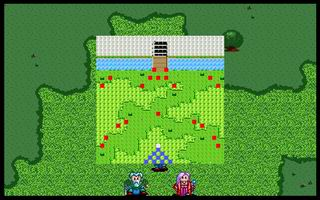
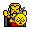

第九章 平原会战

 雷特
雷特 米兰
米兰 克隆
克隆 艾利欧
艾利欧 巴拉多
巴拉多 洛加
洛加 希瓦那
希瓦那 卡里斯
卡里斯 莱特
莱特 凯亚
凯亚
本关敌人：

LV12 莱卡斯 （HP720,AP363,DP111,HIT106,EV26,MV7） LV10 护卫x2 （HP420,AP140,DP115,HIT120,EV30,MV4）
LV10 护卫x2 （HP420,AP140,DP115,HIT120,EV30,MV4） LV10 狂战士 （HP560,AP250,DP73,HIT105,EV25,MV4）
LV10 狂战士 （HP560,AP250,DP73,HIT105,EV25,MV4）LV8 精锐队骑士x6 （HP300,AP138,DP38,HIT96,EV16,MV7）
 LV7 精锐队步兵x6 （HP300,AP134,DP90,HIT104,EV14,MV4）
LV7 精锐队步兵x6 （HP300,AP134,DP90,HIT104,EV14,MV4） LV8 精锐队弓兵x2 （HP300,AP152,DP46,HIT114,EV24,MV4）
LV8 精锐队弓兵x2 （HP300,AP152,DP46,HIT114,EV24,MV4）胜利条件：敌人全灭
失败条件：雷特死亡
战后加入：
LV10 弓兵 莉娜（HP300,AP140,DP70,HIT144,EV33,MV4,长弓,环状甲,回复剂x2）
 LV12 法师 索尼克（HP704,AP145,DP175,HIT99,EV39,MV3,法师杖,祭司袍,圣光弹,灵疗术）
LV12 法师 索尼克（HP704,AP145,DP175,HIT99,EV39,MV3,法师杖,祭司袍,圣光弹,灵疗术）战后报酬： $4000G/$12000G
攻略简要：
此关已经没有先前的容易，精锐队步兵并不强，但是他总是会抓准时机把我军围住，成为卡位的麻烦家伙，所以一开始先将我军散开成两路，分别清除左右的步兵，然后找两名战士围攻较强的狂战士，此时莱卡斯也快到了，立刻把战士调下来与我军会合，留意莱卡斯超高的攻击力，骑兵被打一下就半血了，最好用魔法和弓箭对付，必要时用骑兵攻击，尽量不要被反击，至于其余的兵，都比一般的较强，但是当莱卡斯被击败时，他们也就没有致命的威胁性了。
战后商店道具:
武器： |
防具： |
道具： |
剧情对话：
克隆:前面就是卡兰城...嗯，看样子，好象有人在外面准备招待我们了...
艾利欧:师父!是你的朋友知道我们要来特地邀请我们过去休息吗?不过我们的行踪不是一向都很隐密吗?
米兰:艾利欧大哥!父亲的意思，是说有敌人在等着我们!
艾利欧:哦...哦!是...是吗?真不...不好意思啊!哈哈...
克隆:好了，别闹了!真是顽皮的孩子!
巴拉多:咦!希瓦那，你看带头的那个将领，是不是莱卡斯?
希瓦那:是他没错...但是他怎么会穿著只有骑士团长才能配备的金色铠甲?难道我父亲他...
雷特:好吧!这样下去也不是办法，不如出去再见机行事!
洛加:你就是莱卡斯吗?安妮她现在怎么样了?
莱卡斯:你是说安妮公主吗?我已经送她回格菲迪城了，现在大概已经兄妹相认了!怎么?你还妄想癞蛤蟆吃天鹅肉吗?嘿嘿!趁早死心吧!
希瓦那:莱卡斯，你身上的金色铠甲是怎么回事?我父亲他怎么了?
莱卡斯:贝尔吗?唉!谁叫他生了个好儿子去投靠叛党呢?陛下在知道这件事后,在盛怒之下就把他杀了,并任命我继任骑士团长.
巴拉多:...是你告的密?
莱卡斯:那又怎么样?谁叫你们两个要加入叛党!
希瓦那:你...你这个畜生!妄费我父亲当初那么地看重你!我一定要把你碎尸万段，以慰父亲在天之灵!
莱卡斯:哼!你们两个的叛逃罪行，我还没跟你们算呢!光耍嘴皮子没用的!来呀!
打败战将莱卡斯和他率领的精锐部队。
莱卡斯:好家伙!我会再回来找你们算帐的!
莉娜:你这个凶手!纳命来!
莱卡斯:啊!...小妮子，你找死!
雷特:危险!
米兰:啊!雷特大哥!
莱卡斯:嘿!真的很幸运!没想到竟然歪打正着，作掉了雷特!哈哈哈...
希瓦那:可恶的家伙!你别想跑!
克隆:糟了!现在殿下已经昏迷不醒，有生命的危险!
米兰:��...你到底是谁?突然就冒了出来，害得雷特大哥为你受了重伤!��...
莉娜:...我叫莉娜，是精灵一族的后裔。十几年前，莱卡斯突然率领大军，血洗我们的村子，我父母也惨遭杀害。从此我就设法追寻他的下落，以便找机会报仇。我刚才原本可以杀掉莱卡斯的，没想到他突然冲了出来，害得我无法完成目的...
米兰:你...你还说得出这种话!要不是雷特大哥替你挡住那一击的话，��早就死了!你这...
克隆:好了,米兰!先别急着怪她，你先过来看看，用你的医疗法术，是否能救得了殿下?
米兰:...伤势太重了，我的法术能力也没有办法...要..要是雷特大哥有个万一的话，我也不想活了!呜....
索尼克:怎么了?发生什么事了?
卡里斯:是圣者!您来得正好!
索尼克:我刚才就觉得心神不宁，因此赶紧用传送法术过来看看...果然出事了!
米兰:圣者!求求您救救雷特大哥..我跪下来求求您!
索尼克:...唉!这或许是命中注定吧!你们帮我守住附近，切忌有人打扰!
索尼克:...好了...接下来就看他自己的造化了...
莉娜:...这..这不是最高级的医疗法术『回天圣召』大法?虽然具有起死回生之能，但是也会严重损耗施法者的法力修为...
索尼克:...咦!你是...『精灵仙子』莉娜?难怪知道这个失传已久的法术!
卡里斯:啊!是『精灵仙子』?传说中不仅拥有非常高明的箭术，也能施展强力的法术，既然如此，你那时为何不用这两个方式来攻击莱卡死呢?
莉娜:...失去家人的我，杀死莱卡斯是我唯一的生存目的。为此，我特地修炼了『一击必杀』秘技，以求能确实击杀莱卡斯，虽然双方都会死亡，但为了报父母之仇，我也就不惜任何代价了。没想到他会突然出现，以致我功败垂成..
米兰:你...你还说得出这种话...
克隆:好了，米兰...圣者，真的不知道要如何感谢您...
索尼克:算了!原先亚美达二世遇害时，我就一直耿耿于怀，没有来得及救他...现在能帮助故人之子，保住他的血脉，也就不在乎这点代价了。假以时日，我还可以慢慢回复这些法力的。
莉娜:...实在很抱歉，这都是为了我的缘故...这样好了，既然你们是为了帮助雷特王子，,那我就和你们同行，以报他这次舍身救我的恩德。
米兰:你...
索尼克:这样也好，有莉娜与我们同行，我想会大有帮助的。
艾利欧:我们?
索尼克:为了避免再发生类似的事情，我决定与你们同行，以便能确实地保护雷特的安全。
克隆:真...真抱歉!当初先王托孤于我，而我差点就辜负了先王的遗托...我...
米兰:父亲!别...别这样啊!
雷特:...唔...克隆伯父...别...别做傻事...
米兰:雷特大哥!你醒了!父亲他差一点就...
克隆:若是殿下有什么意外，那...那老臣还有何面目活在世上?
雷特:别...别这么说...现在不是...没事...了吗..
莉娜:殿下，刚才实在是很抱歉。我愿意全力协助你完成复国的心愿。
雷特:事...事情过去就算了...别放在心上...
米兰:啊!雷特大哥昏过去了!圣者...
索尼克:没关系，这是正常现象，让他休息一下就好了。别哭了，把眼泪擦一擦吧。
米兰:嗯!
第九章完